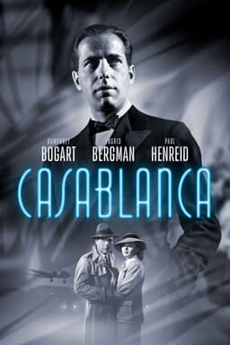
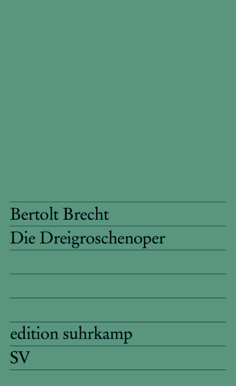

59:08 · 14 OPERE
Quando la norma è l'assurdo e l'assurdo è la norma.
Il filo del discorso
Il relatore usa la parola norma in due sensi: ciò che è prescritto e ciò che una società finisce per considerare normale. La domanda iniziale riguarda quindi il rapporto fra abitudini, potere e capacità di riconoscere una contraddizione. Egemonia, industria culturale, cinema e pubblicità introducono esempi di comportamenti che possono diventare desiderabili anche quando comportano costi. Il fumo, la moda e le politiche ambientali conducono alla definizione proposta di ideologia: un sistema di parole e appartenenze capace di sottrarsi al confronto con la realtà. Le applicazioni alla pandemia e alla politica sono fortemente polemiche e restano attribuite al relatore; i dati e le interpretazioni che presenta non vengono assunti automaticamente come dimostrazioni. La parte centrale insiste sulla responsabilità adulta e sull’educazione al giudizio. Alice Miller offre un richiamo ai legami con l’autorità che ferisce; Orwell introduce il problema delle parole rovesciate. La critica alla prefazione di Eva von Redecker alla Dialettica dell’illuminismo si intreccia poi con una discussione materiale sulle edizioni per bibliofili: il confronto tra due libri diventa l’esempio di un sapere che nasce dalle differenze osservabili e non dalla sola etichetta. Il passaggio ai principi fondativi statunitensi distingue inoltre una dichiarazione di valori dal comportamento di chi li viola. La lezione sul confronto si prolunga nella riflessione sulla scienza. Il relatore avverte che analogie, disegni e semplificazioni possono aiutare a capire, ma anche occultare la complessità degli strumenti matematici. Dopo Cartesio e l’etimologia di metodo, un annuario Kelly’s viene presentato scherzosamente come un internet del 1917: il suo ordine geografico e commerciale mostra che una raccolta di informazioni può avere un metodo preciso senza esaurire il significato della ricerca scientifica. L’annata resta da verificare, mentre la descrizione del volume conserva il valore di esempio argomentativo. Nell’ultima parte forza, persuasione e compensazione articolano una teoria del dominio contemporaneo che il relatore legge soprattutto attraverso finanza e apparati militari. Le dichiarazioni di Lavrov e il caso Moro sono convocati come analogie politiche, mantenendo distinta la testimonianza dalla prova. La domanda finale riguarda chi orienti realmente quei poteri e quale posto vi occupi la volontà popolare. Il ritorno a La società del contrario e all’immagine biblica dei servi a cavallo e dei principi a piedi raccoglie così il tema del mondo rovesciato. Le note editoriali documentano i riferimenti, dichiarano le identificazioni aperte e separano le tesi dell’intervento dai riscontri storici, giuridici e scientifici.
I libri nel discorso

Casablanca
Locandina digitale Warner Bros.: Warner Bros. · film 1942 · immagine promozionale ufficiale corrente
Locandina digitale ufficiale fornita da Warner Bros., con titolo e interpreti. Riferimento cinematografico, non copertina di un libro né poster di prima uscita attribuito al video.
Casablanca è nominato come esempio cinematografico nell’inciso sulla diffusione di modelli del fumo.
Passaggio 6:35 ↗ · Fonti e libro ↗
1984
Copertina: Newton Compton · edizione illustrativa
Orwell e 1984 sono nominati esplicitamente insieme allo slogan che identifica guerra e pace.
Passaggio 18:09 ↗ · Fonti e libro ↗
Costituzione della Repubblica Italiana
Copertina dell’edizione Intra aggiornata al 2023: Intra · 2023 · introduzione di Umberto Vincenti
Copertina autentica del testo integrale, aggiornata alla legge costituzionale 26 settembre 2023 n.1. È successiva al filmato del 2019 e non rappresenta la versione storica letta dal relatore. Umberto Vincenti firma l’introduzione.
Richiamo esplicito alla Costituzione e al ripudio della guerra: interpretazione del relatore sull’invio di armi distinta dal testo dell’articolo 11.
Passaggio 19:07 ↗ · Fonti e libro ↗
La fiducia tradita. Violenze e ipocrisie dell’educazione
Copertina: Garzanti · Saggi blu ·1991
Fotografia autentica dell’edizione Garzanti 1991, nella risoluzione originale 128 × 195. Non ingrandita artificialmente; edizione non attribuita al video.
Alice Miller e La fiducia tradita sono raccomandati esplicitamente nel discorso sulla violenza educativa.
Passaggio 23:57 ↗ · Fonti e libro ↗
Dialettica dell’illuminismo
Copertina: Einaudi, Piccola Biblioteca Einaudi, 2010
Edizione illustrativa dell'opera, con traduzione di Renato Solmi e introduzione di Carlo Galli; non identificata nel video.
L’opera è nominata nel riferimento all’edizione tedesca Fischer con prefazione di Eva von Redecker.
Passaggio 24:45 ↗ · Fonti e libro ↗
Prefazione all’edizione del 75ºanniversario di Dialektik der Aufklärung
Volume contenente la prefazione di Eva von Redecker: S. Fischer · Jubiläumsausgabe ·2022 · volume contenente la prefazione
Immagine ufficiale dell’intero volume di Horkheimer e Adorno che contiene la prefazione di Eva von Redecker. Non è una copertina autonoma della prefazione. Edizione identificata dai dati editoriali discussi, senza confronto del fotogramma.
Il relatore critica esplicitamente la prefazione firmata Eva von Redecker nella Jubiläumsausgabe della Dialettica dell’illuminismo.
Passaggio 24:51 ↗ · Fonti e libro ↗
Dichiarazione d’indipendenza degli Stati Uniti d’America
Facsimile: incisione di Stone del 1823: Documento del 4 luglio 1776 · incisione di William J. Stone del 1823
Riproduzione documentaria dell’incisione di Stone del 1823 conservata dai National Archives. Non è la pergamena originale del 1776, né la copertina di un libro.
La Dichiarazione d’indipendenza è nominata per i principi di vita, libertà e ricerca della felicità.
Passaggio 26:16 ↗ · Fonti e libro ↗
Costituzione degli Stati Uniti d’America
Copertina della raccolta: Testo firmato il17settembre1787. Per l’immagine si usa la raccolta Penguin Classics The Federalist Papers, ISBN 9780140444957, che dichiara di includere il testo della Costituzione; non è una fotografia della pergamena originaria.
Copertina autentica di The Federalist Papers: la descrizione editoriale attesta che la raccolta comprende il testo completo della Costituzione. Non è il frontespizio costituzionale del 1787 e Hamilton, Madison e Jay non sono presentati come unici autori del documento.
Costituzione statunitense e apertura We the People esplicite; segue il richiamo al Primo Emendamento.
Passaggio 26:32 ↗ · Fonti e libro ↗Prefazione all’edizione del 75ºanniversario di Dialektik der Aufklärung
Volume contenente la prefazione di Eva von Redecker: S. Fischer · Jubiläumsausgabe ·2022 · volume contenente la prefazione
Immagine ufficiale dell’intero volume di Horkheimer e Adorno che contiene la prefazione di Eva von Redecker. Non è una copertina autonoma della prefazione. Edizione identificata dai dati editoriali discussi, senza confronto del fotogramma.
La discussione torna alla prefazione e alla commercializzazione dell’edizione da collezione; le qualificazioni polemiche restano del relatore.
Passaggio 28:40 ↗ · Fonti e libro ↗Dialettica dell’illuminismo
Copertina: Einaudi, Piccola Biblioteca Einaudi, 2010
Edizione illustrativa dell'opera, con traduzione di Renato Solmi e introduzione di Carlo Galli; non identificata nel video.
L’edizione speciale viene confrontata con un altro volume di pregio non identificato per titolo.
Passaggio 29:42 ↗ · Fonti e libro ↗
Discorso sul metodo
Copertina: Laterza · Economica 127 · opera in collana dal 1998, ristampa 2025 · traduzione di Maria Garin
Immagine autentica dell’opera, controllata visivamente; l’edizione di riferimento non è attribuita al filmato.
Cartesio e Discorso sul metodo sono nominati nel passaggio dalla divulgazione scientifica alla nozione di metodo.
Passaggio 40:19 ↗ · Fonti e libro ↗
L’opera da tre soldi (Die Dreigroschenoper)
Identificazione probabile
Copertina: Suhrkamp · edition suhrkamp 229 · ristampa corrente 2026
Copertina ufficiale dell’edizione tedesca del testo teatrale, ISBN 9783518102299; la prima rappresentazione risale al 1928. Il catalogo consultato segnala la 48ªedizione 2026: questa ristampa non è attribuita al video.
La frase sul nutrimento che precede la morale è attribuita a Brecht; il titolo non viene pronunciato e il collegamento al testo teatrale è ricostruito dal passo.
Passaggio 51:52 ↗ · Fonti e libro ↗
La società del contrario
Copertina: Zambon · 2005
Copertina autentica dell’edizione di riferimento, controllata visivamente. Non identifica l’esemplare letto o citato nel video.
Il relatore nomina esplicitamente il proprio libro La società del contrario e la sua ispirazione biblica.
Passaggio 58:23 ↗ · Fonti e libro ↗
Qoèlet (Ecclesiaste)
Copertina: Adelphi, Biblioteca Adelphi 414, 2001
Edizione autonoma del libro biblico, versione e commenti di Guido Ceronetti. Non è una copertina della Bibbia integrale né un’edizione confermata nel video.
Ecclesiaste è nominato come provenienza dell’immagine dei servi a cavallo e dei principi che camminano; corrispondenza con Qoèlet 10,7.
Passaggio 58:30 ↗ · Fonti e libro ↗